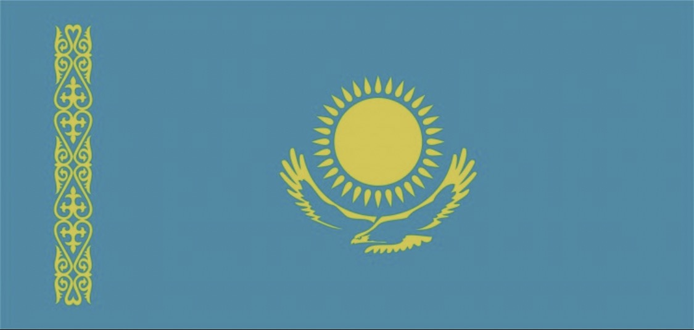
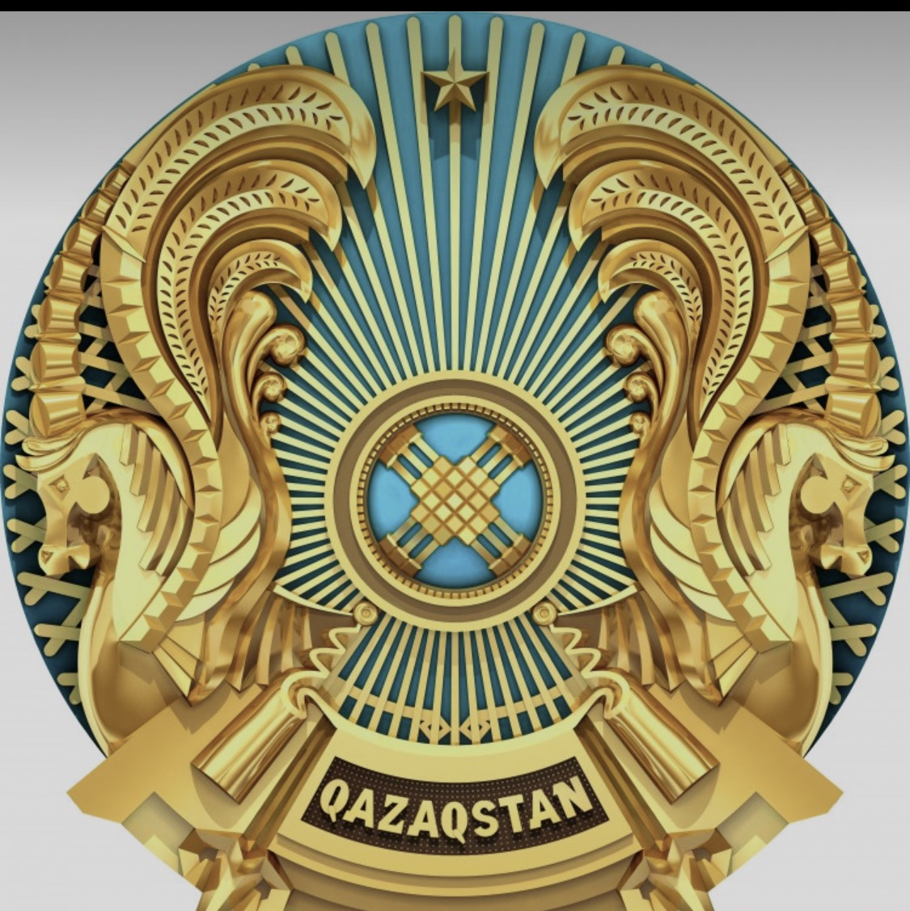

Мемлекеттік Ту
Көгілдір ту — бейбітшілік, ашық аспан және ел бірлігін бейнелейтін Қазақстанның мемлекеттік рәмізі.
Қазақстанның қалаларын, аймақтарын, табиғатын, тарихи орындарын және мемлекеттік рәміздерін интерактивті түрде зертте.
Қазақстан Республикасының мемлекеттік Туы мен Елтаңбасын көріп, олардың мағынасымен таныс.

Көгілдір ту — бейбітшілік, ашық аспан және ел бірлігін бейнелейтін Қазақстанның мемлекеттік рәмізі.

Елтаңбада шаңырақ, қанатты тұлпарлар, жұлдыз және басқа да ұлттық нышандар бейнеленген.
Картадағы қала нүктесін басып, қысқаша ақпаратты аш.
Әр қала — Қазақстан тарихы мен мәдениетінің ерекше бөлігі.
Елорда және заманауи Қазақстанның маңызды орталығы.
Тау, мәдениет және қала өмірі тоғысқан мекен.
Қазақстанның оңтүстігіндегі ірі қала.
Тарихы терең, мәдени мұрасы мол қала.
Каспий жағалауындағы ерекше қала.
Орталық Қазақстанның маңызды қалаларының бірі.
Аймақ атауын басып, кейін толық ақпарат қосуға болады.
Таулар, көлдер, каньондар, дала және Каспий теңізі.
Ерекше жартас бедерімен танымал табиғи орын.
Таулар арасындағы көркем көлдер жүйесі.
Маңғыстаудағы ерекше табиғи ландшафт.
Қазақстанның батысындағы ірі су айдыны.
Қазақстанның кең байтақ далалық кеңістігі.
Табиғи нысандары мен ерекше ландшафттары бар аймақ.
Мемлекеттік Гимннің мәтіні.